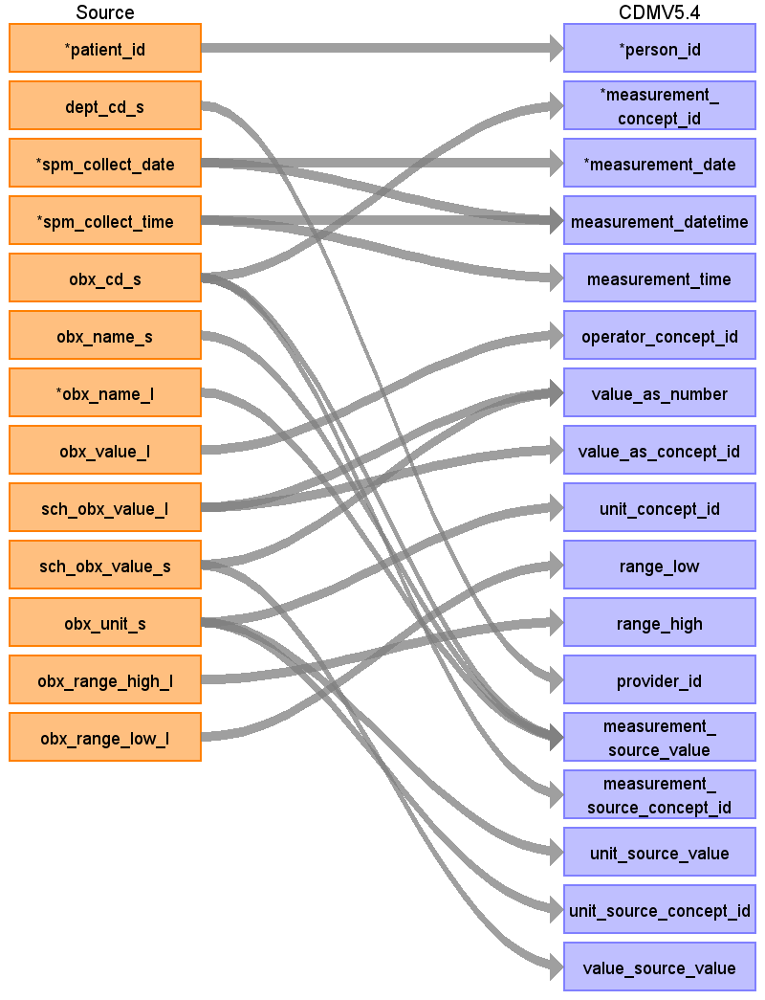
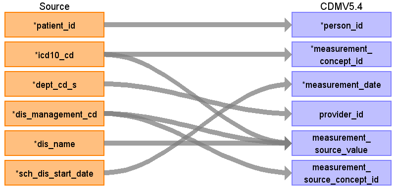

ターゲットテーブル:measurement
・当テーブルは PatientDisease、ObservationResult、PrescriptionData、InjectionData からデータが登録される。
・各テーブルの 病名、検査値、薬剤名などを ATHENA Vocabularyを介したstandard conceptへの変換後、standard conceptのdomainが "Measurement" で定義されているデータが格納される。
本項では、ObservationResultをもとに生成された、device_exposureテーブルの各項目のとの出力結果の対応を記載する。
・concept変換元のソースコードは標準検査項目コードとし、臨中ネット様が作成予定のマッピングテーブルを介したstandard conceptへの変換を行う。

| Destination Field | Source field | Logic | Comment field |
|---|---|---|---|
| measurement_id | 一意の連番を設定する | ||
| person_id | patient_id | person.person_source_valueと結合してperson_idを取得・登録する |
|
| measurement_concept_id | obx_cd_s | measurement_concept_idに変換
Source_to_concept_map: VocabID:RINCHU_OBX_CD DomainID:Measurement |
標準検査コード(JLAC11)をsource_to_concept_mapを介してSNOMED,LOINC他のStandard Vocabularyに変換する |
| measurement_date | spm_collect_date | 検体採取日をそのまま登録する |
|
| measurement_datetime | spm_collect_date spm_collect_time |
CASE
WHEN spm_collect_time = '999999' OR spm_collect_time IS NULL OR spm_collect_time ~ '^[0-9]{6}$' = false OR SUBSTRING(spm_collect_time, 1, 2)::integer >= 24 OR SUBSTRING(spm_collect_time, 3, 2)::integer >= 60 OR SUBSTRING(spm_collect_time, 5, 2)::integer >= 60 THEN TO_TIMESTAMP(spm_collect_date || '000000','YYYYMMDDHH24MISS') ELSE TO_TIMESTAMP(spm_collect_date || spm_collect_time,'YYYYMMDDHH24MISS') END AS start_datetime |
検体採取日＋検体採取時刻を登録する （patientdisease が元テーブルの場合、設定しない） |
| measurement_time | spm_collect_time | CASE
WHEN spm_collect_time = '999999' OR spm_collect_time IS NULL OR spm_collect_time ~ '^[0-9]{6}$' = false OR SUBSTRING(spm_collect_time, 1, 2)::integer >= 24 OR SUBSTRING(spm_collect_time, 3, 2)::integer >= 60 OR SUBSTRING(spm_collect_time, 5, 2)::integer >= 60 THEN '00:00:00'::time ELSE TO_TIMESTAMP(spm_collect_time,'HH24MISS')::time END AS start_time |
検体採取時刻をそのまま登録する （patientdisease が元テーブルの場合、設定しない） |
| measurement_type_concept_id | 32817（EHR）固定とする | ||
| operator_concept_id | obx_value_l | "Source_to_concept_map:
VocabID:RINCHU_OBX_OPERATOR DomainID:Meas Value Operator" 検査結果値に含まれる当符号の抽出ロジックは以下 CASE -- 定性マーカーを抽出 WHEN obx_value_l ~ '\([+\-±]+\)' THEN (regexp_match(obx_value_l, '(\([+\-±]+\))'))[1] -- 純粋な数値の場合はNULL WHEN obx_value_l ~ '^[+-]?[0-9]*\.?[0-9]+([eE][+-]?[0-9]+)?$' THEN NULL -- 演算子+数値のみの場合はNULL（例: <40, >=5.0, <=25） WHEN obx_value_l ~ '^(<|>|<=|>=|≤|≥|≧|＜|＞)\s*[0-9]+\.?[0-9]*$' THEN NULL ELSE -- その他の非数値データ：演算子記号（記号・日本語）を除去した値を返す -- ただし、除去後に純粋な数値になる場合はNULLを返す（例: 600.0<, 180.0以上） CASE WHEN TRIM( regexp_replace( obx_value_l, '(<|>|<=|>=|≤|≥|≧|＜|＞|以上|以下|未満|ｲｼﾞｮｳ|ｲｶ|ﾐﾏﾝ)', '', 'g' ) ) ~ '^[+-]?[0-9]*\.?[0-9]+([eE][+-]?[0-9]+)?$' THEN NULL ELSE regexp_replace( obx_value_l, '(<|>|<=|>=|≤|≥|≧|＜|＞|以上|以下|未満|ｲｼﾞｮｳ|ｲｶ|ﾐﾏﾝ)', '', 'g' ) END END AS value_source_value |
検査結果値に含まれる当符号を抽出し、source_to_concept_mapを介してStandard Vocabularyに変換する （patientdisease が元テーブルの場合、設定しない） |
| value_as_number | sch_obx_value_s sch_obx_value_l |
CASE
WHEN sch_obx_value_s IS NOT NULL THEN sch_obx_value_s -- sch_obx_value_sがNULLの場合、obx_value_lから等符号を除去した数値を抽出して登録 WHEN obx_value_l IS NOT NULL THEN CASE -- 不等号（記号・日本語）を除去して数値を抽出 WHEN TRIM( regexp_replace( obx_value_l, '(<|>|<=|>=|≤|≥|≧|＜|＞|以上|以下|未満|ｲｼﾞｮｳ|ｲｶ|ﾐﾏﾝ)', '', 'g' ) ) ~ '^[+-]?[0-9]*\.?[0-9]+([eE][+-]?[0-9]+)?$' THEN TRIM( regexp_replace( obx_value_l, '(<|>|<=|>=|≤|≥|≧|＜|＞|以上|以下|未満|ｲｼﾞｮｳ|ｲｶ|ﾐﾏﾝ)', '', 'g' ) )::numeric ELSE NULL END ELSE NULL END AS value_as_number |
標準単位換算値（数値型）をそのまま登録する （patientdisease が元テーブルの場合、設定しない） |
| value_as_concept_id | sch_obx_value_l | Source_to_concept_map:
VocabID:RINCHU_OBX_VALUE DomainID:Meas Value |
検査結果値をsource_to_concept_mapを介してStandard Vocabularyに変換する （patientdisease が元テーブルの場合、設定しない） |
| unit_concept_id | obx_unit_s | Source_to_concept_map:
VocabID:RINCHU_OBX_UNIT DomainID:Unit |
標準単位をsource_to_concept_mapを介してStandard Vocabularyに変換する （patientdisease が元テーブルの場合、設定しない） |
| range_low | obx_range_low_l | CASE
WHEN obx_range_low_l ~ '^[+-]?[0-9]*\.?[0-9]+([eE][+-]?[0-9]+)?$' THEN obx_range_low_l::numeric ELSE NULL END AS range_low |
正常値下限をそのまま登録する （patientdisease が元テーブルの場合、設定しない） |
| range_high | obx_range_high_l | CASE
WHEN obx_range_high_l ~ '^[+-]?[0-9]*\.?[0-9]+([eE][+-]?[0-9]+)?$' THEN obx_range_high_l::numeric ELSE NULL END AS range_high |
正常値上限をそのまま登録する （patientdisease が元テーブルの場合、設定しない） |
| provider_id | dept_cd_s | 当該標準診療科コードを示すprovider_idを取得して登録する |
|
| visit_occurrence_id | （設定しない） | ||
| visit_detail_id | （設定しない） | ||
| measurement_source_value | obx_cd_s obx_name_s obx_name_l |
COALESCE(obx_cd_s, '') || '|' || COALESCE(obx_name_s, '') || '|' || COALESCE(obx_name_l, '') || '|' || COALESCE(spm_cd_s, '') || '|' || COALESCE(spm_name_s, '') AS source_regvalue |
検査項目標準コード|検査項目標準名称|材料標準コード|材料標準名称の形式に編集して判読可能な値として登録する 検査項目標準コード|検査項目標準名称の形式に編集して判読可能な値として登録する (patientdiseaseの場合、ICD10コード|病名管理番号|病名表記) |
| measurement_source_concept_id | obx_cd_s | measurement_concept_idに変換
Source_to_concept_map: VocabID:RINCHU_OBX_CD DomainID:Measurement |
source_to_concept_mapから検査項目標準コード(JLAC11)のsource_concept_idを取得しセットする |
| unit_source_value | obx_unit_s | 取得元データの単位を登録する。 （patientdisease が元テーブルの場合、設定しない） |
|
| unit_source_concept_id | obx_unit_s | Source_to_concept_map:
VocabID:RINCHU_OBX_UNIT DomainID:Unit |
標準単位をsource_to_concept_mapを介してsource_concept_idに変換する （patientdisease が元テーブルの場合、設定しない） |
| value_source_value | sch_obx_value_s | 検査結果値そのままを登録する。 （patientdisease が元テーブルの場合、設定しない） |
|
| measurement_event_id | （設定しない） | ||
| meas_event_field_concept_id | （設定しない） |
本項では、PasientDiseaseをもとに生成された、device_exposureテーブルの各項目のとの出力結果の対応を記載する。
例：「ICD10 / R70.1:血漿粘（稠）度異常 (2)」 → 「OMOP コンセプト ID / 4246053: Elevated erythrocyte sedimentation rate and abnormality of plasma viscosity」

| Destination Field | Source field | Logic | Comment field |
|---|---|---|---|
| measurement_id | 一意の連番を設定する | ||
| person_id | patient_id | person.person_source_valueと結合してperson_idを取得・登録する |
|
| measurement_concept_id | icd10_cd | Source_to_concept_map:
VocabID:RINCHU_DIAGCD, ATHENA_ICD10 DomainID:Measurement |
（patientdiseaseの場合、ICD-10コードをAthenaのStandard Vocabularyに変換する） |
| measurement_date | sch_dis_start_date | 病名開始日をそのまま登録する |
|
| measurement_datetime | （patientdisease が元テーブルの場合、設定しない） | ||
| measurement_time | （patientdisease が元テーブルの場合、設定しない） | ||
| measurement_type_concept_id | 32817（EHR）固定とする | ||
| operator_concept_id | （patientdisease が元テーブルの場合、設定しない） | ||
| value_as_number | （patientdisease が元テーブルの場合、設定しない） | ||
| value_as_concept_id | （patientdisease が元テーブルの場合、設定しない） | ||
| unit_concept_id | （patientdisease が元テーブルの場合、設定しない） | ||
| range_low | （patientdisease が元テーブルの場合、設定しない） | ||
| range_high | （patientdisease が元テーブルの場合、設定しない） | ||
| provider_id | dept_cd_s | 当該標準診療科コードを示すprovider_idを取得して登録する |
|
| visit_occurrence_id | （設定しない） | ||
| visit_detail_id | （設定しない） | ||
| measurement_source_value | dis_management_cd icd10_cd dis_name |
COALESCE(icd10_cd, '') || '|' || COALESCE(dis_management_cd, '') || '|' || COALESCE(dis_name, '') |
ICD10コード|病名管理番号|病名表記の形式に編集して判読可能な値として登録する 検査項目標準コード|検査項目標準名称の形式に編集して判読可能な値として登録する (patientdiseaseの場合、ICD10コード|病名管理番号|病名表記) |
| measurement_source_concept_id | dis_management_cd | Source_to_concept_map:
VocabID:RINCHU_DIAGCD, ATHENA_ICD10 DomainID:Measurement |
source_to_concept_mapから標準コード(ICD10)のsource_concept_idを取得しセットする
|
| unit_source_value | （patientdisease が元テーブルの場合、設定しない） | ||
| unit_source_concept_id | （patientdisease が元テーブルの場合、設定しない） | ||
| value_source_value | （patientdisease が元テーブルの場合、設定しない） | ||
| measurement_event_id | （設定しない） | ||
| meas_event_field_concept_id | （設定しない） |